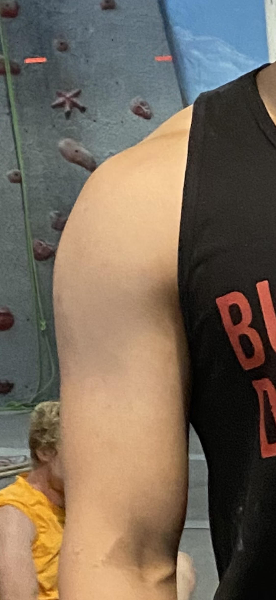

There are various types of holds that are used in climbing gyms. Different holds work different muscles and skills. This page displays and describes some of the most common holds
Jugs are objectively the easiest type of holds to grab and are most commonly used in beginner level routes. Generally you can fit all fingers inside and reach pretty deep.
This is what a crimp hold looks like. The reason why it looks like a repellent is because it keeps all the climbers away. It is my least favorite hold. They are small and you can only get your fingertipes in the hold which makes them painful and hard to hang on to. They also often cause tendon injuries.

This is what a big sloper hold looks like. As you can see, they kind of look my housemate's abnormally proportioned shoulders. I also hate these holds because they are big and slippery and it is very difficult to grip them well since you are forced to use an open hand grip.